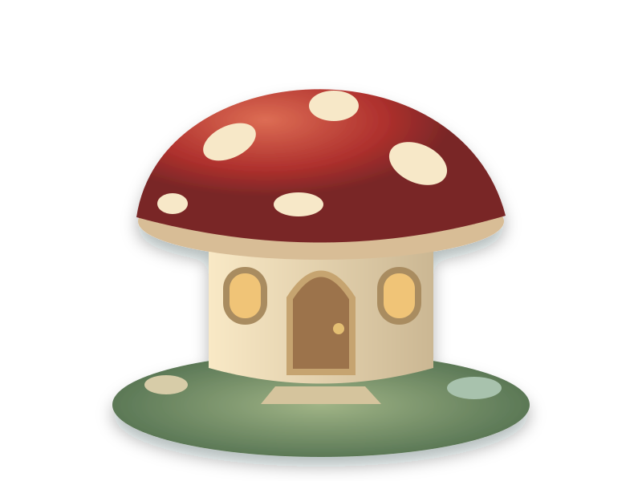
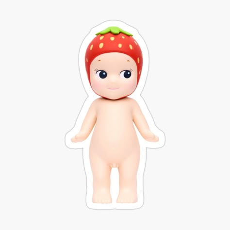
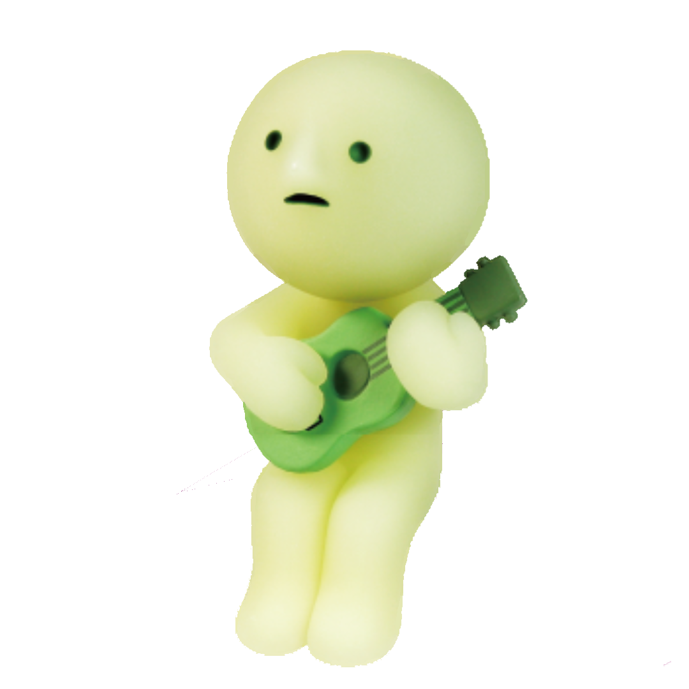

A little home
for my work.
Laraib’s study
Make yourself at home.

Welcome to my study
Choose Résumé, Projects, Education, or Contact below.


Tap the envelope for my résumé, or choose a page below.
Photo sources
Trinket photos found via Pinterest: Sonny Angel · Smiski